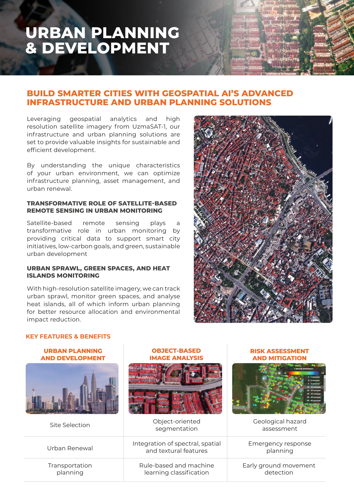
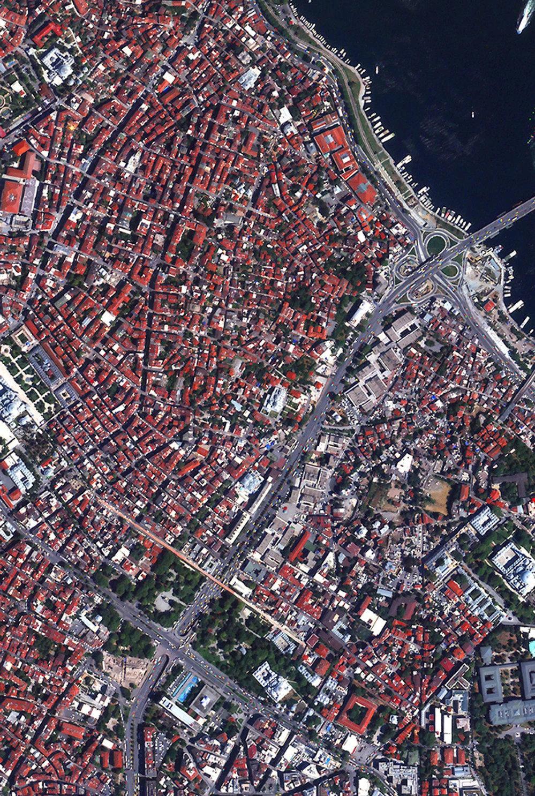
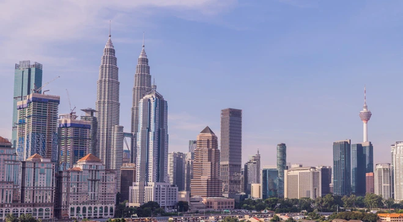
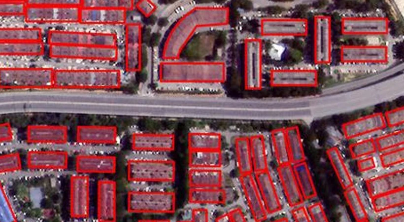
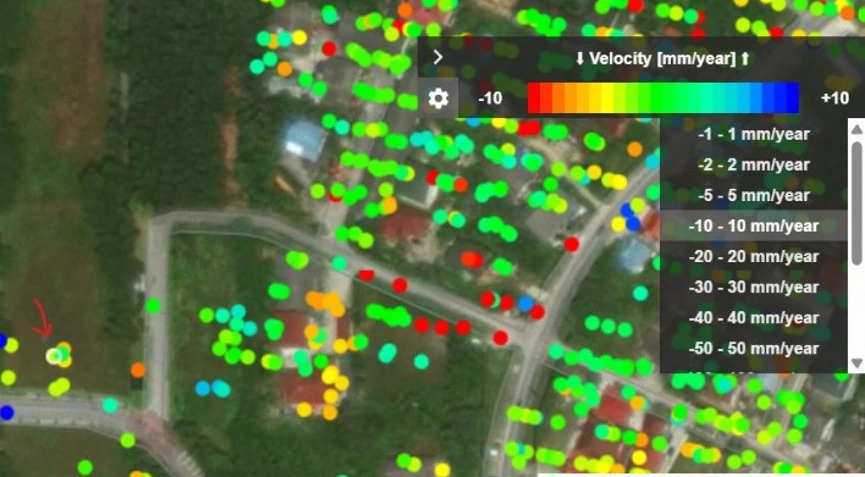
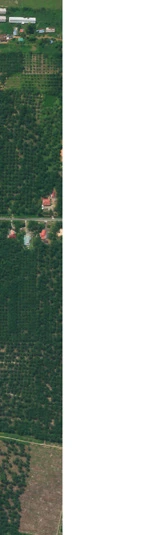
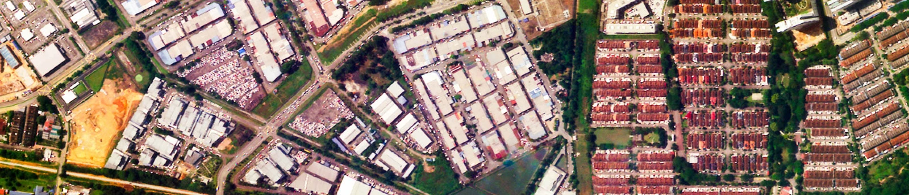

Build smarter cities with geospatial intelligence.

Infrastructure and urban planning
Geospatial analytics and high-resolution imagery from UzmaSAT-1 provide insights for sustainable and efficient development. Understanding urban environments supports infrastructure planning, asset management and urban renewal.
Urban monitoring
Satellite-based remote sensing supports smart-city initiatives, low-carbon goals and sustainable development. Track urban sprawl, green spaces and heat islands to inform resource allocation and reduce environmental impact.
Key features & benefits
- Urban planning and development: site selection, urban renewal and transportation planning.
- Object-based image analysis: object-oriented segmentation; integration of spectral, spatial and textural features; rule-based and machine-learning classification.
- Risk assessment and mitigation: geological hazard assessment, emergency response planning and early ground movement detection.
In pictures
{kind=link}

{kind=link}
{kind=link}

{kind=link}
{kind=link}

{kind=link}
{kind=link}

{kind=link}
{kind=link}

{kind=link}

{kind=link}
{kind=link}

{kind=link}
Read the complete source transcript
TRANSFORMATIVE ROLE OF SATELLITE-BASED REMOTE SENSING IN URBAN MONITORING
URBAN SPRAWL, GREEN SPACES, AND HEAT ISLANDS MONITORING
BUILD SMARTER CITIES WITH GEOSPATIAL AI’S ADVANCED INFRASTRUCTURE AND URBAN PLANNING SOLUTIONS
Leveraging geospatial analytics and high resolution satellite imagery from UzmaSAT-1, our infrastructure and urban planning solutions are set to provide valuable insights for sustainable and efficient development.
By understanding the unique characteristics of your urban environment, we can optimize infrastructure planning, asset management, and urban renewal.
Satellite-based remote sensing plays a transformative role in urban monitoring by providing critical data to support smart city initiatives, low-carbon goals, and green, sustainable urban development
With high-resolution satellite imagery, we can track urban sprawl, monitor green spaces, and analyse heat islands, all of which inform urban planning for better resource allocation and environmental impact reduction.
URBAN PLANNING & DEVELOPMENT
KEY FEATURES & BENEFITS
URBAN PLANNING AND DEVELOPMENT
OBJECT-BASED IMAGE ANALYSIS
RISK ASSESSMENT
AND MITIGATION
Geological hazard
assessment Object-oriented
segmentation Site Selection
Emergency response
planning
Early ground movement
detection
Integration of spectral, spatial
and textural features
Rule-based and machine
learning classification
Urban Renewal
Transportation
planning